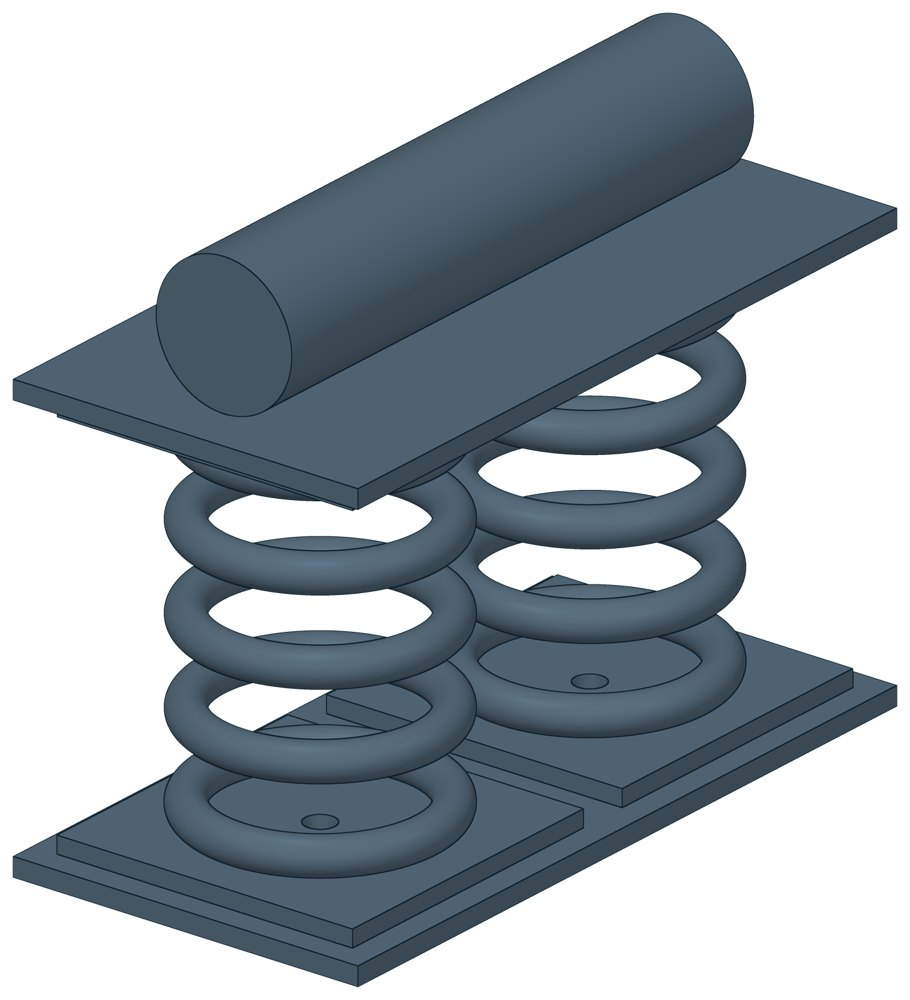

Блоки катковые пружинные ОСТ 34-10-612-93
ОСТ 34-10-612-93. Допускаемая нагрузка на пружину — до 58,43 кН, масса 34–110 кг.

- Документ
- ОСТ 34-10-612-93
- Исполнений
- 10
- Масса
- 34–110 кг
- 3D-модели
- у всех исполнений (условные: общий вид по габаритам)
Таблица исполнений ОСТ 34-10-612-93
| Обозначение | Код ПРОМБУРГ | Допускаемая нагрузка на пружинукН (кгс) | Максимальный прогиб пружинымм | Высота блокамм | Массакг | 3D |
|---|---|---|---|---|---|---|
| 01 ОСТ 34-10-612-93 | ПБ-34612-0000-1 | 5,24 (537) | 70 | 260 | 34 | 3D |
| 02 ОСТ 34-10-612-93 | ПБ-34612-0000-2 | 8,00 (816) | 70 | 270 | 35 | 3D |
| 03 ОСТ 34-10-612-93 | ПБ-34612-0000-3 | 11,67 (1190) | 70 | 285 | 36 | 3D |
| 04 ОСТ 34-10-612-93 | ПБ-34612-0000-4 | 16,34 (1666) | 70 | 309 | 44 | 3D |
| 05 ОСТ 34-10-612-93 | ПБ-34612-0000-5 | 19,66 (2006) | 70 | 330 | 45 | 3D |
| 06 ОСТ 34-10-612-93 | ПБ-34612-0000-6 | 26,34 (2686) | 70 | 350 | 70 | 3D |
| 07 ОСТ 34-10-612-93 | ПБ-34612-0000-7 | 32,60 (3325) | 70 | 390 | 81 | 3D |
| 08 ОСТ 34-10-612-93 | ПБ-34612-0000-8 | 40,00 (4080) | 70 | 400 | 97 | 3D |
| 09 ОСТ 34-10-612-93 | ПБ-34612-0000-9 | 48,60 (4953) | 70 | 419 | 100 | 3D |
| 10 ОСТ 34-10-612-93 | ПБ-34612-0000-10 | 58,43 (5960) | 70 | 395 | 110 | 3D |
Чтобы заказать, сообщите обозначение и код ПРОМБУРГ: +7 (499) 325-51-35, promburg@yandex.ru.
Нормативные документы
- ОСТ 34-10-612-93 Блок катковый пружинный. Типы и основные размеры — документ, по которому изготавливается изделие
Связанные позиции
- Соседний тип: ОСТ 34-10-611-93 — Блоки двухкатковые
Другие типы раздела
Опоры трубопроводов ТЭС и АЭС (ОСТ 34-10-610…623-93)
- Опоры неподвижные для вертикальных коробов ОСТ 34-10-610-93
- Блоки двухкатковые ОСТ 34-10-611-93
- Опора скользящая и неподвижная ОСТ 34-10-615-93
- Опора приварная скользящая и неподвижная ОСТ 34-10-616-93
- Опоры хомутовые скользящие ОСТ 34-10-617-93
- Опоры хомутовые неподвижные ОСТ 34-10-618-93
- Опора катковая ОСТ 34-10-619-93
- Опоры скользящие и неподвижные с направляющим хомутом ОСТ 34-10-620-93
- Опоры сварных отводов ОСТ 34-10-621-93
- Опоры трубчатые крутоизогнутых отводов ОСТ 34-10-622-93
- Опоры скользящие неподвижные ОСТ 34-10-623-93
Частые вопросы
Чем неподвижная опора отличается от подвижной?
Неподвижная закрепляет трубу в одной точке и принимает усилия от температурного расширения, давления и трения. Подвижная держит вес трубы и даёт ей перемещаться при нагреве. Неподвижные делят трассу на участки компенсации, подвижные стоят между ними. Место и тип каждой опоры задаёт проект.
Скользящая или катковая опора?
По СП 124.13330.2012 (п. 10.34) скользящие опоры применяют при всех способах прокладки и для всех диаметров труб. Катковые — для труб диаметром 200 мм и более при осевом перемещении, при прокладке в тоннелях, на кронштейнах, на отдельно стоящих опорах и эстакадах. Катковая опора снижает силу трения, которая передаётся на неподвижные опоры.
На каком расстоянии ставить опоры?
По СП 124.13330.2012 (п. 10.5) максимальные расстояния между подвижными опорами на прямых участках определяют расчётом на прочность и по допускаемому прогибу. Готового шага «по диаметру» норматив не даёт: пролёт задаёт проект.
По какому диаметру подбирать — Dн или Ду?
По наружному диаметру трубы Dн: именно он стоит в таблицах серии. Ду — условный проход, округлённая величина: Ду 100 соответствует Dн 108. В заявке указывайте Dн и толщину стенки трубы.
Из какой стали изготавливаются опоры?
По рабочим чертежам серии листовые детали — Ст3сп5 ГОСТ 14637-89, хомуты из круга — сталь 20 ГОСТ 1050-88. Для районов с низкой расчётной температурой воздуха применяется низколегированная сталь, в том числе 09Г2С; размеры опор при этом не меняются. В заявке укажите расчётную температуру наружного воздуха.
Что указать в заявке, чтобы получить цену без уточнений?
Обозначение с номером исполнения или код ПБ, количество, Dн и стенку трубы, расчётную температуру наружного воздуха, покрытие, город доставки и желаемый срок. Кнопка «В заявку» в таблице собирает спецификацию, которую можно выгрузить в Excel или отправить письмом.